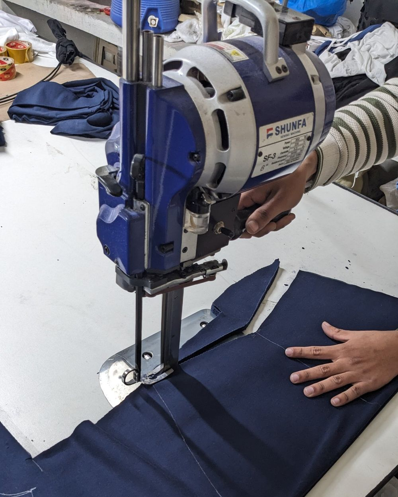
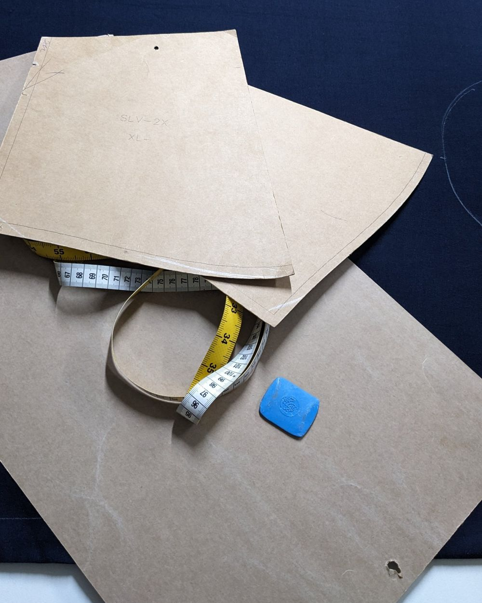
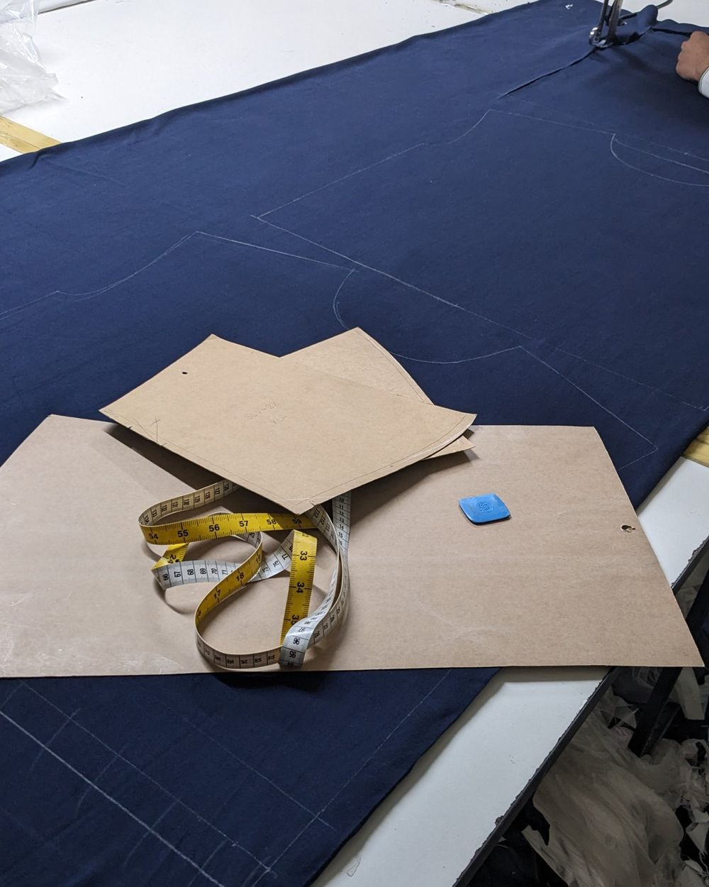
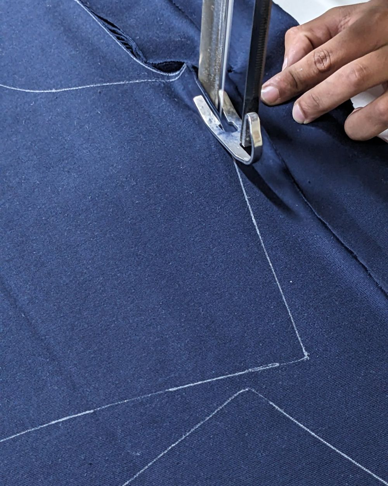
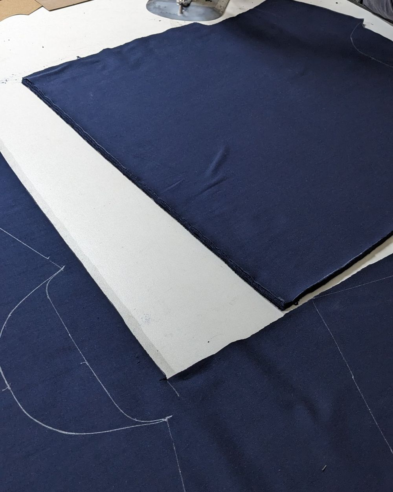
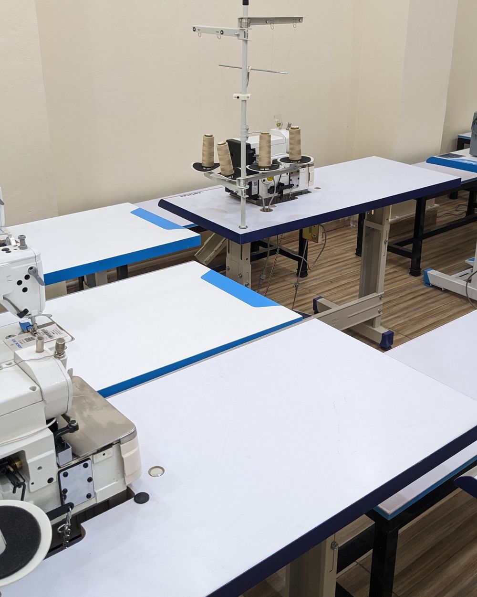
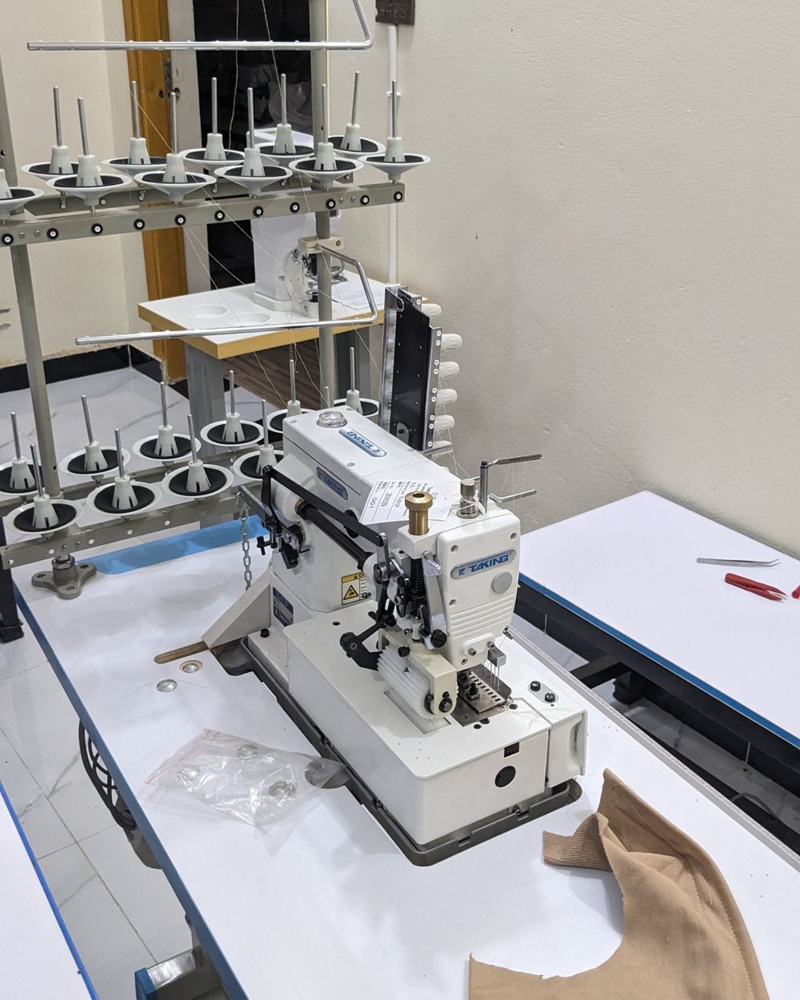
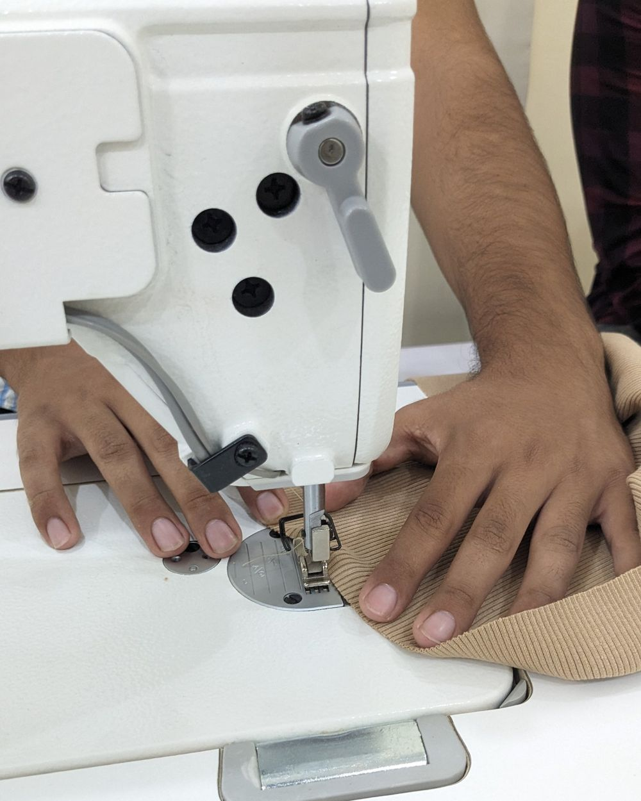
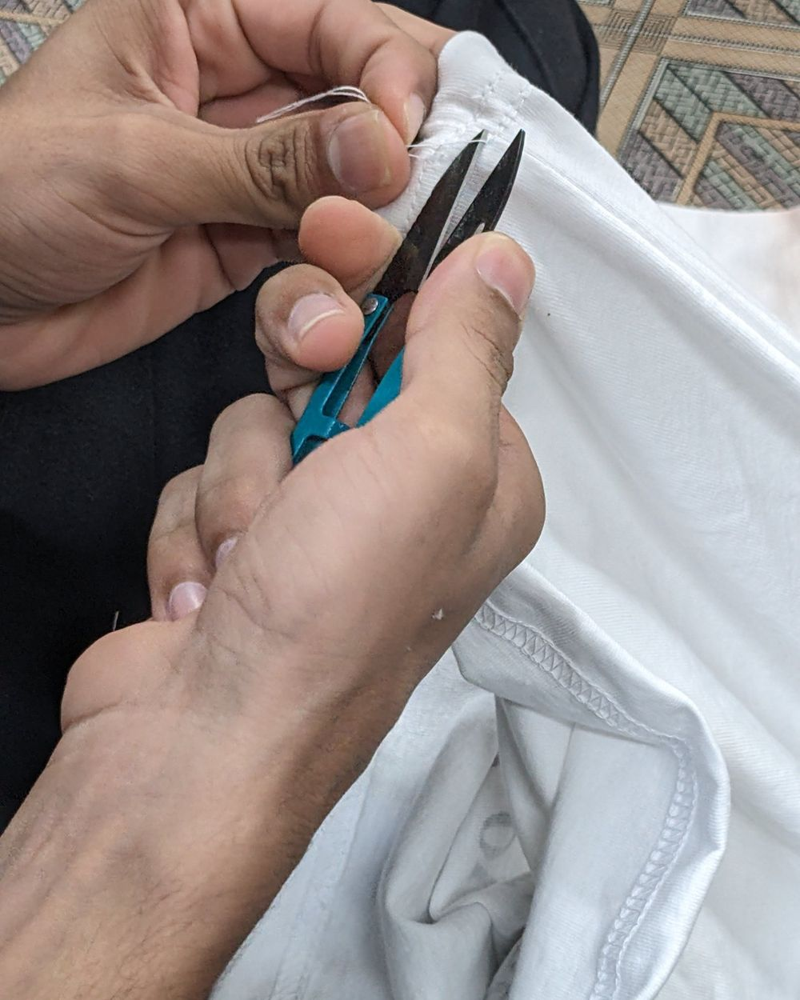
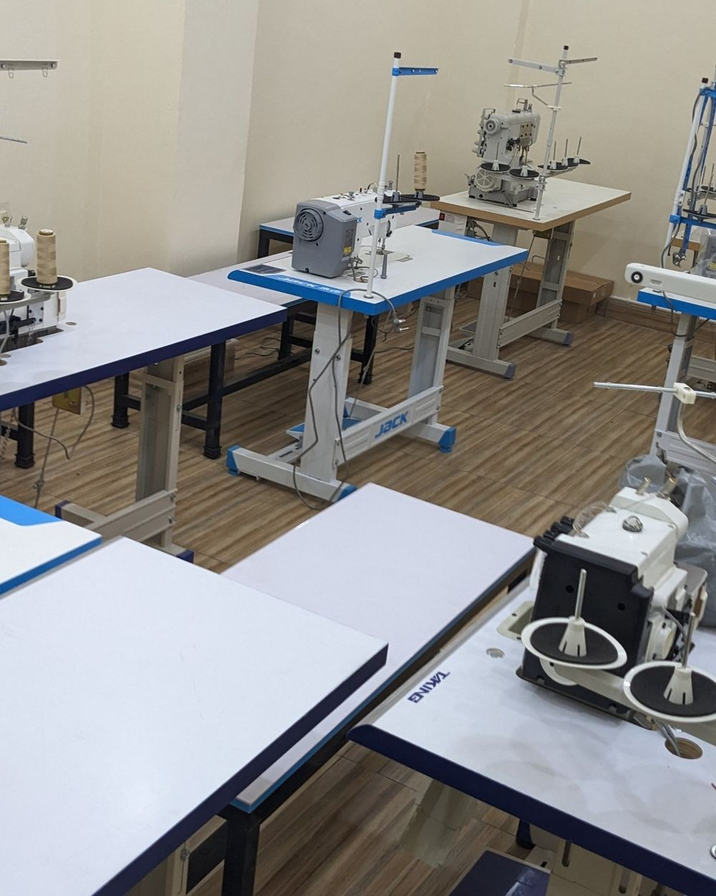

Product Requirements
Discuss the garment, reference and intended product direction.
A practical approach to product requirements, customization, production and order preparation.

DESPORTEX products are made in our own factory in Sialkot. Requirements are agreed before production starts, and the exact process can vary by product, customization and quantity.
Real photos from our production floor in Sialkot: pattern making, fabric cutting, stitching and finishing checks.









Clear requirements help keep the order aligned from development through preparation.
Discuss the garment, reference and intended product direction.
Confirm the specifications and approve a sample, usually ready in 7–10 days.
Colors, labels and branding: embroidery, screen printing, sublimation or DTF / heat transfer.
Bulk production follows the approved sample, usually in 3–4 weeks.
Review and preparation according to the agreed order requirements.
Prepare completed products for the next stage of the order.